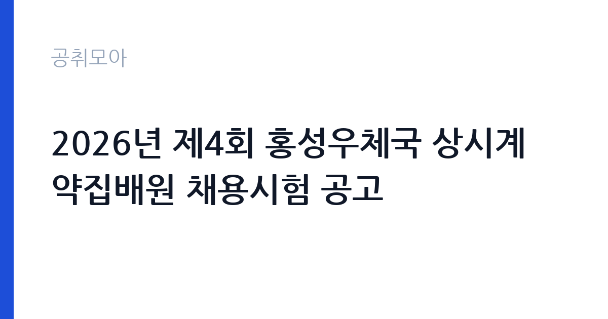

[국가기관] 2026년 제4회 홍성우체국 상시계약집배원 채용시험 공고
과학기술정보통신부 우정사업본부 충청지방우정청 홍성우체국 · 충남 · 마감 2026-10-02 (D-10) · 출처 나라일터

한눈에 보는 모집 조건
| 기관 | 과학기술정보통신부 우정사업본부 충청지방우정청 홍성우체국 |
|---|---|
| 공고명 | 2026년 제4회 홍성우체국 상시계약집배원 채용시험 공고 |
| 고용형태 | 공무직 |
| 근무지 | 충남 |
| 게시일 | 2026-09-22 |
| 마감일 | 2026-10-02 (D-10) |
지원자격, 이렇게 읽으세요
- 상시계약집배원 3명
- 접수 ~2026-10-02 마감
- 세부 조건은 원문 공고문 확인
응시 자격은 제1종 또는 제2종 보통운전면허와 제2종 소형면허 또는 원동기장치자전거면허를 동시에 소지하고 자동이륜차 운전이 가능한 분입니다. 두 종류의 면허를 함께 갖춰야 하므로 보유 면허를 미리 점검하시기 바랍니다. 실기시험이 포함되므로 이륜차 운전 숙련도가 필요합니다. 세부 사항은 반드시 공고문을 확인하시기 바랍니다.
이 공고의 포인트
첫 번째 포인트는 공무직 3명 선발이라는 점입니다. 기간제가 아닌 정년까지 가능한 신분이라 우체국 집배를 장기 경력으로 삼을 수 있습니다. 두 번째로 방문과 등기우편, 전자우편의 3가지 접수 방법을 운영해 지원이 편리합니다. 세 번째로 서류와 실기, 면접의 단계별 전형이라 각 단계의 준비가 명확합니다. 충남 지역 집배 공무직을 노리는 분께 좋은 기회입니다.
전형은 어떻게 진행되나
시험은 1차 서류전형과 2차 실기시험, 3차 면접시험으로 진행됩니다. 서류 접수는 9월 30일부터 10월 2일 18시까지이며, 마감일 소인 등기우편물은 10월 6일 도착한 익일특급에 한해 유효합니다. 서류 합격자는 10월 8일에 발표되고, 실기와 면접은 10월 13일, 최종합격자는 10월 19일에 발표됩니다. 접수처는 홍성우체국 3층 우편물류과 채용담당입니다.
원문에서 확인한 전형 방식
[홍성우체국 공고 제2026-14호] 《 2026년 제4회 홍성우체국 상시계약집배원 채용시험 공고 》 2026년도 제4회 홍성우체국 상시계약집배원 채용시험 계획을 다음과 같이 공고합니다. 1. 채용 예정직종 : 상시계약집배원(공무직) 2. 채용 예정인원 : 3명 3. 시험방법 : 1차 서류전형, 2차 실기시험, 3차 면접시험 4. 서류접수 : 2026. 9. 30.(수) ~ 2026. 10. 2.(금) 18시까지 (방문, 등기우편, 전자우편 접수) -접수장소: 홍성우체국 3층 우편물류과(충남 홍성군 홍성읍 내포로111, 우편물류과 채용담당) -마감일(2026. 10. 2.)소인 등기우편물의 경우 10. 6.도착한 익일특급 등기우편에 한하여 유효 5. 서류전형 합격자 발표 : 2026. 10. 8.(목) 6. 실기 및 면접시험 : 2026. 10. 13.(화) 7. 최종합격자 발표 : 2026. 10. 19.(월) 8. 응시자격 - 제1종 또는 제2종 보통운전면허 와 제2종 소형먼허 또는 제2종 원종기장치자전거면허 를 동시에 소지하고 자동이륜차 운전이 가능한자 ※ 자세한 사항은 반드시 공고문을 확인하시기 바랍니다.
이런 분께 추천해요
- 보통운전면허와 이륜차 면허를 함께 보유하신 분
- 홍성 지역 우체국 공무직으로 안정적으로 일하고 싶으신 분
- 집배 실기와 면접을 차근차근 준비할 수 있으신 분
지원 전 체크리스트
- 보통면허와 이륜차 면허를 동시에 보유했는지 확인했습니다
- 서류 접수 기간(9월 30일~10월 2일 18시)과 방법을 확인했습니다
- 등기우편 유효 조건(10월 6일 도착 익일특급)을 확인했습니다
- 실기시험에 대비해 이륜차 운전 연습을 했습니다
모집 일정과 제출 타이밍
서류 접수는 9월 30일부터 10월 2일 18시까지 3일간입니다. 서류 합격자 발표는 10월 8일, 실기와 면접은 10월 13일, 최종합격자 발표는 10월 19일입니다. 단계별 일정이 명확하므로 각 전형에 맞춰 준비하시기 바랍니다. 실기시험까지 2주 정도 여유가 있어 운전 연습 시간을 확보하시기 바랍니다.
직무 이해하기: 국가기관
상시계약집배원은 홍성우체국 관할 구역의 우편물 집배와 소포 배달을 맡습니다. 이륜차를 이용한 구역 순회와 등기·택배 배달, 반송 관리가 핵심 업무입니다. 충남 홍성에서 근무하며, 국가기관 카테고리의 공무직 공고입니다.
자기소개서 작성 팁
응시서류에서는 운전 경력과 배달·운송 관련 경험을 구체적으로 기술하시기 바랍니다. 안전운전 경력과 담당 구역에 대한 이해를 보여주시기 바랍니다. 공무직으로서 장기 근무하겠다는 의지를 명확히 밝히시기 바랍니다.
면접 준비 포인트
실기와 면접에서는 이륜차 운전 능력과 안전 의식, 집배 업무 이해를 평가합니다. 교통법규 준수와 악천후 대응 경험을 구체적인 사례로 답변하시기 바랍니다. 홍성 지역 지리에 대한 이해도 좋은 인상을 줄 수 있습니다.
급여·근무조건 읽는 법
보수 수준은 원문 공고문에서 확인하셔야 합니다. 상시계약집배원(공무직)의 급여는 우정사업본부의 공무직 보수 기준이 적용되며, 통상 월급제로 지급됩니다. 정확한 기본급과 수당 구성, 상여와 복리후생은 원문에서 확인하시기 바랍니다. 공무직의 정년과 처우 조건도 원문에서 함께 살펴보시기 바랍니다.
자주 묻는 질문
- 어떤 면허가 필요합니까
제1종 또는 제2종 보통운전면허와 제2종 소형면허 또는 원동기장치자전거면허를 동시에 소지하고 자동이륜차 운전이 가능해야 합니다. 공고일 기준 유효한 면허인지 확인하시기 바랍니다. - 전형 일정이 어떻게 됩니까
10월 2일 접수 마감 후 10월 8일 서류 합격자 발표, 10월 13일 실기·면접, 10월 19일 최종합격자 발표 순으로 진행됩니다. - 공무직의 신분이 어떻습니까
기간의 정함이 없는 근로자로 정년까지 근무가 가능합니다. 우체국 집배 공무직의 세부 처우는 원문에서 확인하시기 바랍니다.
함께 보면 좋은 공고
[국가기관] 과학기술정보통신부 전문임기제 다급(과학기술 인력양성) 경력경쟁채용 재공고 — 마감 2026-10-06[국가기관] 육군교육사령부 한시임기제군무원(응급구조담당) 채용 — 마감 2026-10-06[국가기관] 2026년 제5회 식품의약품안전처 공무원(임기제) 경력경쟁채용시험 공고 — 마감 2026-10-06출처: 나라일터 공개정보를 바탕으로 공취모아가 정리한 안내글입니다. 모집 조건·일정은 변경될 수 있으니 지원 전 반드시 원문 공고문을 확인하세요. 본 글은 정보 제공용이며 합격을 보장하지 않습니다.